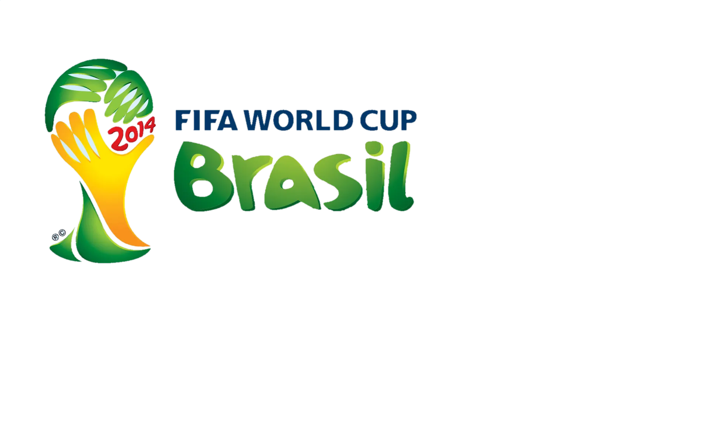

Japão na Copa do Mundo
de 2014
| Nome |
Posição |
Time |
| Eiji Kawashima |
Goleiro |
Standard Liège |
| Shūsaku Nishikawa |
Goleiro |
Sanfrecce Hiroshima |
| Shūichi Gonda |
Goleiro |
F.C. Tokyo |
| Yasuyuki Konno |
Zagueiro |
Gamba Osaka |
| Atsuto Uchida |
Lateral-direito |
Schalke 04 |
| Yūichi Komano |
Lateral-direito |
Jubilo Iwata |
| Maya Yoshida |
Zagueiro |
Southampton |
| Yasuhito Endō |
Meio-campista |
Gamba Osaka |
| Makoto Hasebe |
Meio-campista |
1. FC Nürnberg |
| Keisuke Honda |
Meio-campista |
Milan |
| Shinji Kagawa |
Meio-campista |
Manchester United |
| Yōichi Gotō |
Meio-campista |
Chūkyō University |
| Hiroshi Kiyotake |
Meio-campista |
1. FC Nürnberg |
| Hiroki Yamada |
Meio-campista |
Cerezo Osaka |
| Hotaru Yamaguchi |
Meio-campista |
Cerezo Osaka |
| Manabu Saito |
Meio-campista |
Yokohama F. Marinos |
| Yoshito Ōkubo |
Atacante |
Kawasaki Frontale |
| Shinji Okazaki |
Atacante |
Mainz 05 |
| Yūya Ōsako |
Atacante |
1. FC Köln |
| Yoshito Ōkubo |
Atacante |
Urawa Red Diamonds |